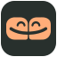

<!doctype html><html lang="en"><meta charset="utf-8"><title>threed® tab identity</title><style>*{box-sizing:border-box}body{margin:0;background:#ebe9e2;color:#252823;font:16px Arial,sans-serif;padding:28px}main{max-width:660px;margin:auto}h1{font-size:24px;margin:0 0 8px}p{color:#68706a;margin:0 0 24px}.cards{display:flex;gap:16px}.card{border-radius:20px;padding:24px;flex:1;background:#f5f3ed}.card.dark{background:#161c19;color:#f5f2ea}h2{font-size:14px;font-weight:400;margin:0 0 20px}.icons{display:flex;align-items:center;gap:22px;height:72px}img{display:block}small{display:block;margin-top:20px;opacity:.65}</style><main><h1>threed® — The 3D object library</h1><p>A growing library of editable 3D objects.</p><div class="cards"><section class="card"><h2>Light appearance</h2><div class="icons"></div><small>64 · 32 · 16 px</small></section><section class="card dark"><h2>Dark appearance</h2><div class="icons"></div><small>64 · 32 · 16 px</small></section></div></main></html>